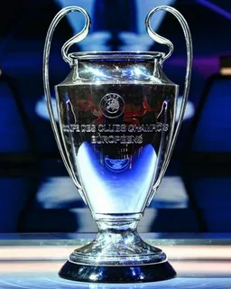
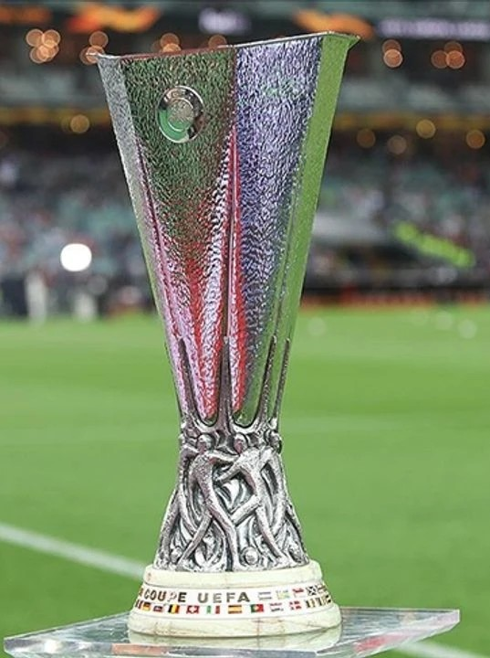
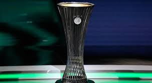

Avrupa'nın en büyük kulüp turnuvasıdır. Her yıl kıtanın en iyi takımları kupayı kaldırmak için mücadele eder. Yeni formatıyla daha fazla heyecan sunmaktadır.
Son Şampiyon: Real Madrid
Kıtanın iki numaralı kupasıdır ve genellikle UCL gruplarından elenen güçlü takımları da içerir. Türk takımlarının başarılı olduğu bir turnuvadır.
Son Şampiyon: Atalanta
2021 yılında başlayan bu üçüncü seviye turnuva, daha fazla kulübe Avrupa'da oynama şansı tanımaktadır. Hızla popülerlik kazanmıştır.
Son Şampiyon: Olympiakos